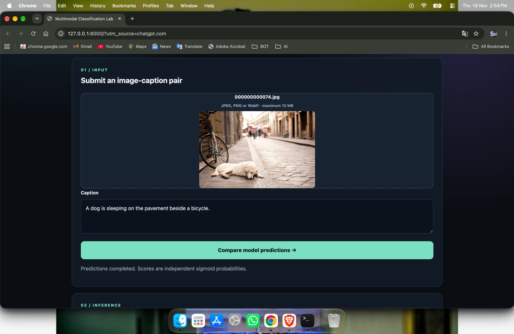
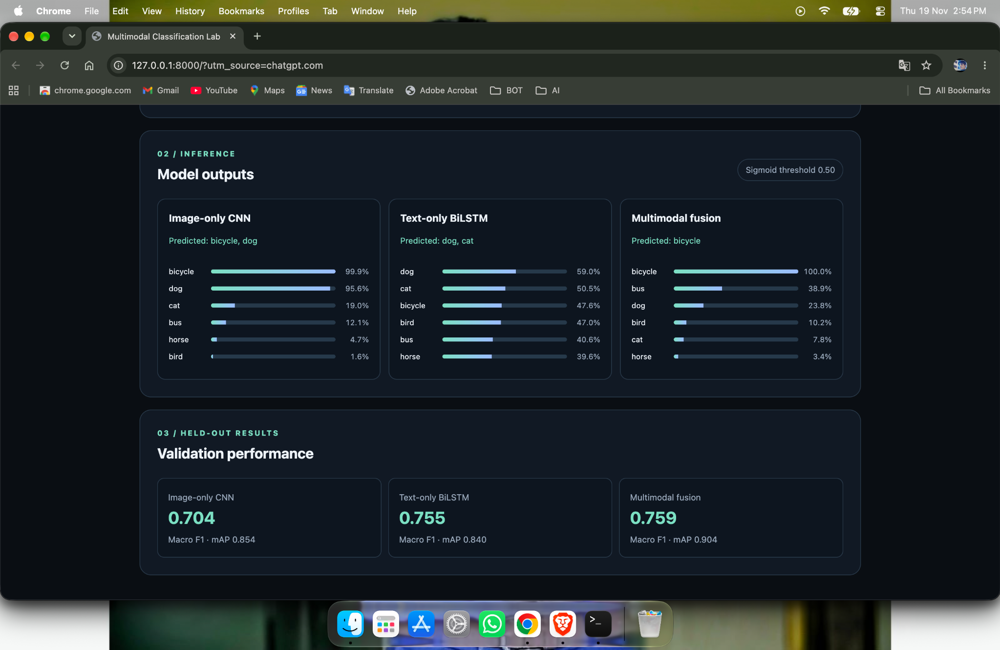

Image-only CNN
EfficientNetB0 visual features
A comparative deep-learning project that studies how visual features and associated captions can work together for multi-label image classification.
The FastAPI backend and browser interface have been run locally with all three trained model artifacts. A public hosted inference endpoint has not been deployed.
Compare three model branches on the same paired image-caption examples and investigate whether feature-level fusion improves classification performance:
Learn visual representations from the image with an ImageNet-pretrained EfficientNetB0 backbone.
Encode the associated caption with trainable word embeddings and a Bidirectional LSTM.
Concatenate image and caption feature vectors, then classify with dense layers and dropout.
Both modalities are trained against the same annotation-derived target vector. The image-only and text-only branches are baselines; the fusion branch combines both feature representations.
The subset was prepared from MS COCO 2017 instance annotations and captions. Ground-truth labels are derived from object categories in the annotations; captions are model inputs, not the source of the labels. All captions for an image are joined into one text input and each image appears once in the manifest.
The task is multi-label: an image can contain more than one target category. The six configured categories are bicycle, bird, bus, cat, dog and horse. The subset selection process favours under-represented target classes, so this is a selected, approximately class-balanced subset rather than a random sample of the full COCO distribution.
All three models were evaluated on the same 750-image official validation subset at an independent sigmoid threshold of 0.50.
| Model | Macro F1 | Micro F1 | mAP | Exact match |
|---|---|---|---|---|
| Image-only CNN | 0.7043 | 0.6972 | 0.8536 | 0.4000 |
| Text-only BiLSTM | 0.7551 | 0.7471 | 0.8402 | 0.5067 |
| Multimodal fusion | 0.7593 | 0.7498 | 0.9036 | 0.5067 |
Fusion produced the highest macro F1 and mAP in this run. Its macro-F1 gain over the text-only model is small (+0.0042), and exact-match accuracy is unchanged. The clearest improvement is mAP (+0.0634 over text-only), suggesting better ranking of relevant labels. Cross-validation and repeated runs are still needed before claiming a robust general improvement.
These are actual initial-run results from the selected 3,750-image subset, not cross-validation averages. The class-balanced selection process and caption content may influence performance.
Upload an image and enter its caption directly on this portfolio page. The hosted inference API evaluates the same pair with all three trained models and returns their class probabilities here, without opening a separate application.


The portfolio is hosted as a static site. Predictions require the separate FastAPI inference service to be running and all three trained model files plus the text vocabulary to be available. The API address will be preconfigured here after deployment.
EfficientNetB0 visual features
Caption embeddings and recurrent features
Combined image and caption features
The live interface is embedded in this portfolio page. Its inference API is a separate backend service; the page will only show predictions after that service reports all three trained models as ready. No simulated predictions are displayed.
Implemented: paired dataset preparation, three model branches, weighted multi-label training, held-out evaluation, prediction API and browser interface.
Next: complete image-ID-level K-fold cross-validation, run the bounded hyperparameter search, inspect per-class errors and caption dependence, document repeatability, then update this page with the final experiment results.